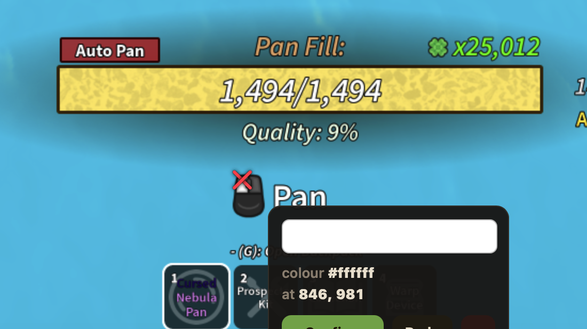
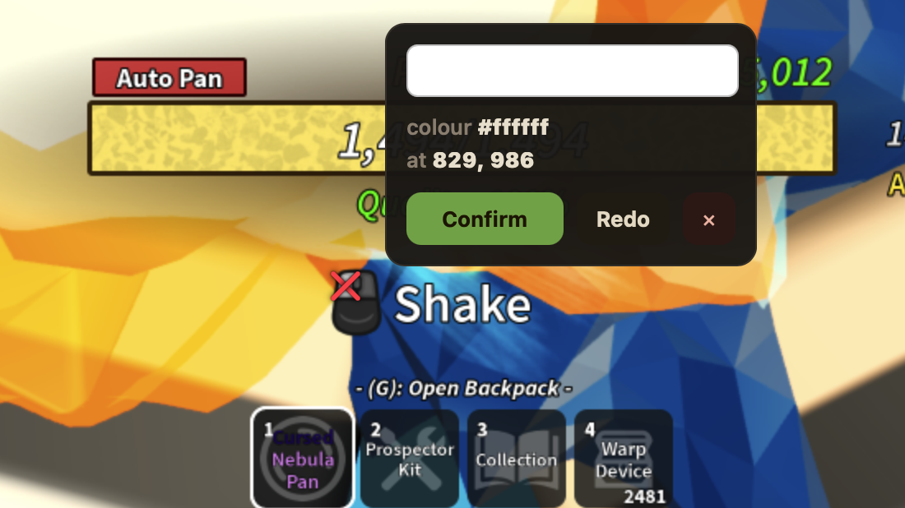
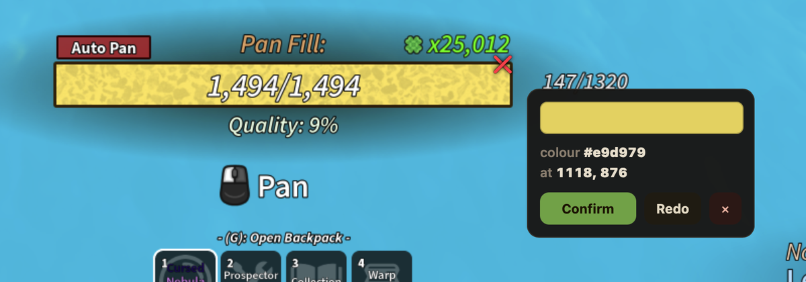
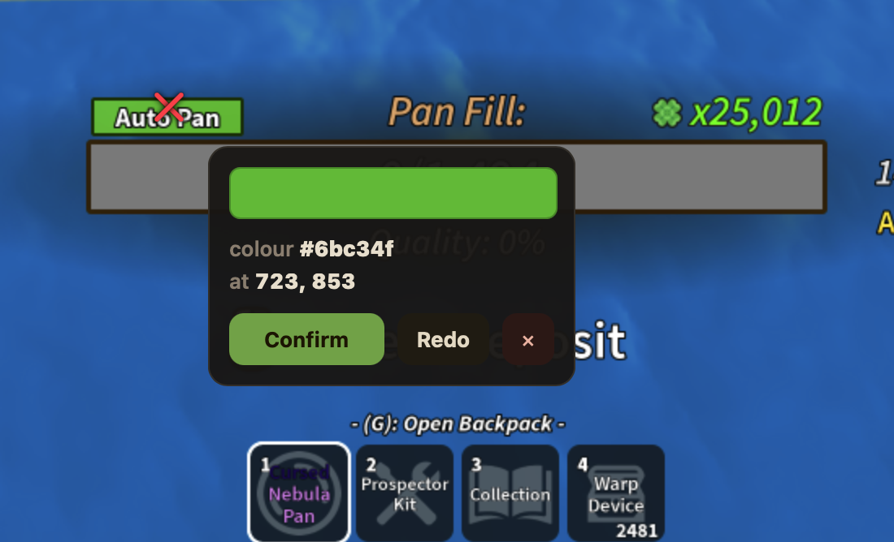

A free automation companion for the Roblox game Prospecting. It reads your screen, drives the pan/dig/shake loop with ordinary keyboard and mouse input, and never touches the game's process.
Version 5.0.0 · 2026-08-08 · Windows x64 & macOS (Apple Silicon)Free. No account, no access code. Builds are currently unsigned — verify the checksum before running.
Prospector Lite watches the game's on-screen cues — the dig bar, the capacity bar, the pan and shake prompts — and presses the same keys and mouse buttons you would. It is an external tool built on screen capture and OS-level input: no script injection, no reading Roblox's memory, no modified client, no drivers. Everything it learns and stores stays in local files on your machine.
Welcome → permissions (with live status and one-click tests) → guided calibration → readiness check. Resumable, honest, skippable — skipping never weakens the safety checks.
Detects the dig bar, capacity bar, and game prompts from pixels and drives the full pan/dig/shake cycle, with bounded recovery when the game misbehaves.
An in-app Calibrate tab with sanitized example screenshots tunes every pixel position for your screen — including a one-click "test capacity calibration" with an annotated preview.
Cue-mask calibration that matches the game's visual prompts robustly across lighting and UI shifts, required and verified during setup.
Live pans/hour, run history, and an optional overlay HUD. All statistics stay on your machine.
Save, switch, and share named setting presets as .ppbuild files.
Esc stops instantly and every stop path first releases all held keys and buttons. Independent watchdogs cap runaway behavior.
Warning badges open a drawer that explains what was observed, the likely cause, and the exact setting to fix — with deep links, bounded one-click Apply/Undo, and a searchable local FAQ.
Paste your own webhook URL for start/stop/stats alerts. Off by default; nothing is built in.
A permanent tab showing every capability the app uses, the exact build identity (version, commit, signing state), network behavior, and your local data files with open/export/delete actions.
The sanitized example screenshots that ship inside the setup wizard — tight crops of the game cues the detector is calibrated against.




Official downloads exist in exactly one place: the GitHub release. Verify every file against SHA256SUMS.txt (how to verify). Machine-readable metadata: release.json.
No Apple Developer or Authenticode certificate is in place yet, so both platforms warn on first launch. The checksum is the integrity mechanism — never disable Gatekeeper, SmartScreen, or your antivirus for this or any app.
Screen capture + OS input synthesis. No injection, no process-memory reading, no client modification, no packet interception — verify it yourself.
No update checks, no analytics, no telemetry, no IP or location collection. The only network paths are opt-in and point at servers you choose (your webhook, your AI key). Full inventory.
macOS needs exactly three permissions (screen, input, hotkeys) — each shown with live status, an explanation, and an in-app test. Windows needs none beyond a normal user process.
The complete source is public and every build links the exact commit it was built from in its Trust Center. (No open-source license yet — the code is published for inspection.)
Version, commit, and the unsigned status are stamped into each build and shown in-app; release notes and checksums live with the release.
Settings, calibration, run history — plain local JSON files listed in the Trust Center with open, export, and delete actions. Privacy policy.
| macOS | Download the DMG → verify the checksum (shasum -a 256 -c SHA256SUMS.txt --ignore-missing) → drag the app to Applications → first launch: right-click → Open → Open → grant Screen Recording, Accessibility, and Input Monitoring when the wizard asks. Full walkthrough. |
|---|---|
| Windows | Download the installer or portable ZIP → verify the checksum (Get-FileHash -Algorithm SHA256) → run it. If SmartScreen warns (unsigned build): More info → Run anyway — only after the checksum matches. Full walkthrough. |
| From source | Python 3.11+ — clone the repo and follow BUILDING.md. |
Yes — completely free, with no account, no access code, and no paid tier. The source is public.
No. It captures your screen and sends ordinary OS input events, exactly like pressing the keys yourself. The safety boundary is documented with verification commands in ROBLOX_SAFETY_BOUNDARY.md.
Screen Recording reads the game pixels, Accessibility sends the clicks and keys, and Input Monitoring lets the Esc safe-stop hotkey work even while Roblox has focus. Each is explained and testable in the Trust Center; without them the relevant feature simply stays off.
The builds are not Authenticode-signed yet, so SmartScreen has no reputation for them. Verify the SHA-256 checksum against the release's SHA256SUMS.txt, then choose More info → Run anyway. Never disable SmartScreen itself.
Open the Calibrate tab any time (or re-run the wizard from the Tutorial menu). Game UI updates and resolution changes move pixels — recalibration takes a couple of minutes with guided screenshots.
Local JSON files: ~/Library/Application Support/Prospector Lite on macOS, %APPDATA%\Prospector Lite on Windows (next to the scripts when running from source). The Trust Center lists every file with open/export/delete actions.
It's all at github.com/ProspectorsPlus/Prospecting-Auto-Pan. Inside the app, Trust Center → View Code opens the exact file and line of each capability, pinned to the commit your build was made from.
Open a GitHub issue with your version (shown on the welcome screen), OS, what you expected, and what happened. Security problems: use private vulnerability reporting instead.
Yes, possibly. External input can still look automated, and automation may violate the Roblox Terms of Use. The project makes no safety promises — that honesty is part of the design.
The first public stable release: guided setup with Skip Wizard, tutorial auto-open with honest opt-out, the local diagnostics & recommendations system, validated capacity calibration, healed and guarded Windows parity, and the public source repository wired into every View Code button. Version numbering continues the repository's release lineage, so the audited 1.0.0-rc line ships as 5.0.0.
Bugs and questions: GitHub Issues (see SUPPORT.md for what to include — and what never to post). Security vulnerabilities: report privately. In-app: the tutorial, the FAQ browser, and the Trust Center answer most questions.